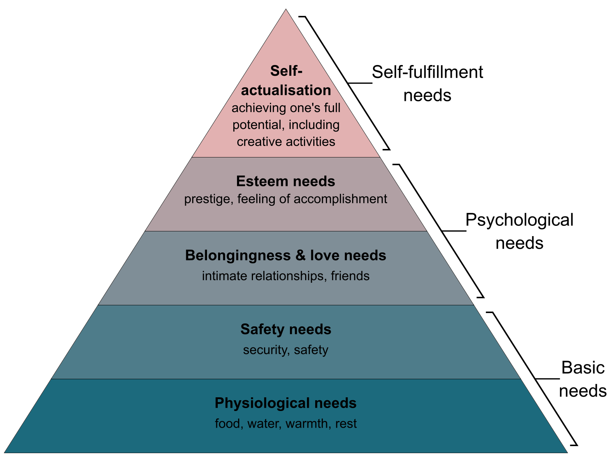

Maslow's Hierarchy of Needs - Basic Overview

The Five Basic Needs1
footnotes
-
There have been many extended applications beyond these four needs, and even Maslow himself later realized that self-actualization wasn’t necessarily the final step in a fulfilled life. As Kaltko-Rivera points out, Maslow was interested in the spiritual idea of self-transcendence as a step beyond self-actualization. ↩
references
- Koltko-Rivera, Mark E. `Rediscovering the Later Version of Maslow’s Hierarchy of Needs: Self-Transcendence and Opportunities for Theory, Research, and Unification.` Review of General Psychology, vol. 10, no. 4, 1 Dec. 2006, pp. 302–317., doi:10.1037/1089-2680.10.4.302. https://www.simplypsychology.org/maslow(2).pdf.
- Maslow, A. H. (1943). A theory of human motivation. Psychological Review, 50(4), 370–396. https://doi.org/10.1037/h0054346. https://psychclassics.yorku.ca/Maslow/motivation.htm.
- `Hierarchy of Needs of Abraham Maslow.` A First Look at Communication Theory, by Emory A. Griffin et al., Mcgraw-Hill Education, 2019, pp. 124–133. http://www.afirstlook.com/docs/hierarchy.pdf.
- Mcleod, S. A. (2020, March 20). Maslow's hierarchy of needs. Simply Psychology. https://www.simplypsychology.org/maslow.html.